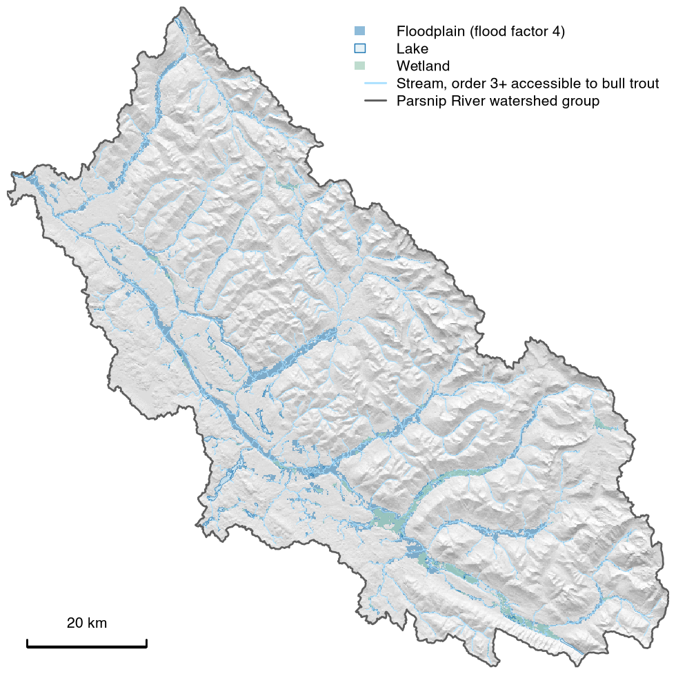

Map floodplains from an elevation model and a stream network.
flooded maps floodplains from terrain: the low, gently sloping ground beside streams. It reads terrain rather than modelling flood flows, so it is quick to run over large areas for screening and planning. From a 30 m elevation model it maps the valley floors of a whole watershed group, as in the map below. From 1 m lidar it also picks out raised ground across a valley floor, such as road and rail grades, dykes and fill, that can cut a floodplain off from its river.

Floodplain (flood factor 4) of the Parsnip River watershed group, BC, from the 30 m MRDEM-30 elevation model, modelled on streams of order 3 and up that bull trout can reach according to the default configuration of link.
How it works
The Valley Confinement Algorithm (US Forest Service; Nagel et al. 2014) finds unconfined valley bottoms: valley floors wide and flat enough for a river to spread out and build a floodplain, as opposed to reaches held between valley walls. flooded ports it to R from BlueGeo and bcfishpass. Ground counts as floodplain where it is:
- gently sloped (9% or less by default);
- close to a stream, both in a straight line (1 km by default) and in a distance that counts steep ground as farther;
- below a water level set at a multiple of bankfull depth above nearby streams. Bankfull depth comes from each stream’s upstream area and mean annual precipitation (Hall et al. 2007).
That multiple is the flood factor. Three presets run from the active channel (2) through the functional floodplain (4) to the valley bottom (6). Small gaps are then filled and small patches dropped, and lakes and wetlands can be added. Each part of a shared floodplain can be assigned to the streams it belongs to, carrying reach flags such as fish habitat onto the ground beside each reach.
What it needs
- Elevation. flooded fetches an elevation model for an area of interest, by default Natural Resources Canada’s MRDEM-30 (30 m, all of Canada, no login). Any elevation raster on a projected grid in metres works, such as 1 m provincial lidar DEMs from stac-elevation-bc, or a DEM built at any resolution from the LidarBC point clouds in stac-pointcloud-bc.
- Streams. Stream lines with upstream contributing area in hectares. In BC, fwapg adds it to the Freshwater Atlas; the atlas as published in the BC Data Warehouse does not carry it. Elsewhere, any network with upstream area works.
- Precipitation (optional). Mean annual precipitation over each stream’s upstream area. In BC, fwapg carries it on every segment from ClimateBC. Without it, bankfull depth comes from upstream area alone.
Installation
pak::pak("NewGraphEnvironment/flooded")Functions still change between releases (NEWS), so pin a version for repeatable work: pak::pak("NewGraphEnvironment/flooded@vX.Y.Z").
Example
A 5 km reach of the Bulkley River ships with the package. Its floodplain at the default flood factor (6), by stream:
library(flooded)
dem <- terra::rast(system.file("testdata/dem.tif", package = "flooded"))
streams <- sf::st_read(system.file("testdata/streams.gpkg", package = "flooded"), quiet = TRUE)
valleys <- fl_valley_confine(
dem, streams,
area_field = "upstream_area_ha",
precip = fl_stream_rasterize(streams, dem, field = "map_upstream")
)
by_river <- fl_valley_attribute(valleys, streams, group = "gnis_name", dem = dem)
by_river$area_ha <- round(as.numeric(sf::st_area(by_river)) / 1e4)
sf::st_drop_geometry(by_river)[, c("gnis_name", "area_ha")]
#> gnis_name area_ha
#> 1 Bulkley River 264
#> 2 Cesford Creek 112
#> 3 Richfield Creek 130
#> 4 Robert Hatch Creek 50
#> 5 <NA> 99Floodplain shared by two streams counts toward both, so the rows add up to more than the 287 ha total.
Learn more
- Valley confinement: each step on the bundled reach, and the three flood levels.
- Bring your own DEM via STAC: 25 m provincial data against 1 m lidar.
- Floodplains of the Parsnip River watershed group: how much floodplain a whole watershed group holds, and how that changes with the flood level.
- floodplains: flooded run over BC watershed groups at 30 m, with the land cover change inside each floodplain from 2017 to 2023 attributed to fire and harvest.
- stac-floodplains-bc: those results to download, by watershed group: the floodplain at three flood factors, land cover for each year and its change, with an interactive map. Readable from rstac, QGIS 3.42+ or any STAC client.
- Function reference.
Ecosystem
| Package | Role |
|---|---|
| fresh | Stream network modelling engine: segment, classify, cluster, aggregate |
| link | Intrinsic habitat models: develop, test and communicate |
| wet | Stream flow and water temperature for BC’s Freshwater Atlas |
| flooded | Delineate floodplain extents from DEMs and stream networks (this package) |
| drift | Track land cover change within floodplains over time |
| floodplains | Floodplain and land cover change modelling for BC watershed groups |
| stac_floodplains_bc | STAC catalogue of floodplain land cover change in BC, 2017-2023, by watershed group |
| cd | Climate departure analysis from ERA5-Land reanalysis |
| fly | Estimate airphoto footprints and select optimal coverage for a study area |
Land cover change: fresh (network) → flooded (floodplains) → drift (land cover change) → floodplains (watershed groups) → stac_floodplains_bc (published)
Data and methods it builds on
- Code adapted from BlueGeo (Devin Cairns, MIT) and bcfishpass (Simon Norris, Apache 2.0), following the USDA VCA Toolbox. Parameters and flood levels: methodology. What the output can be used to claim: floodplain interpretation.
- fwapg (Simon Norris): the BC Freshwater Atlas in PostgreSQL, with upstream area, ClimateBC mean annual precipitation and channel width on its stream segments.
- NRCan’s MRDEM-30 elevation model.
- Bundled data: BC’s 25 m TRIM DEM, the Freshwater Atlas, stream access and habitat modelled by link (which applies bcfishpass’s barrier and habitat override tables), ClimateBC precipitation and BC lidar, with licences in
inst/NOTICE.md.
Citation
Cite flooded from CITATION.cff, or with “Cite this repository” on GitHub.
License
MIT (see LICENSE). Adapted code is credited in LICENSE.note; data licences are in inst/NOTICE.md.